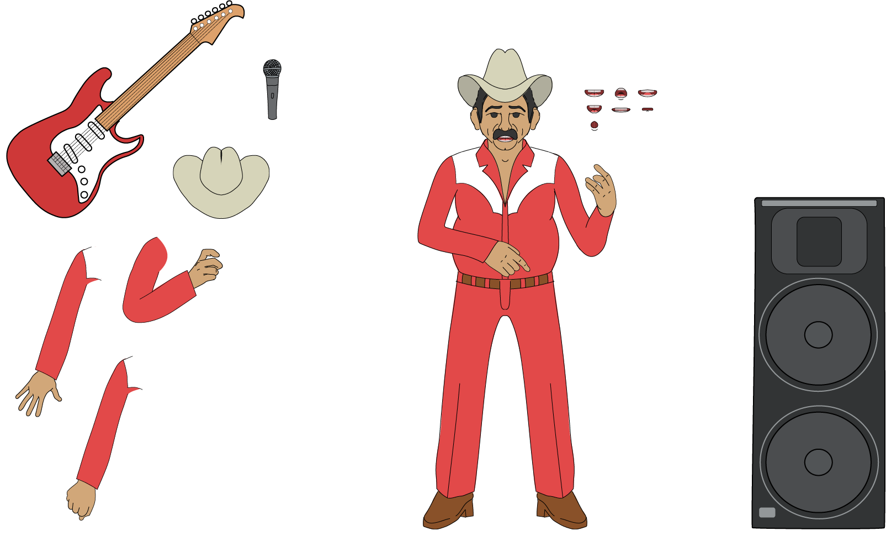
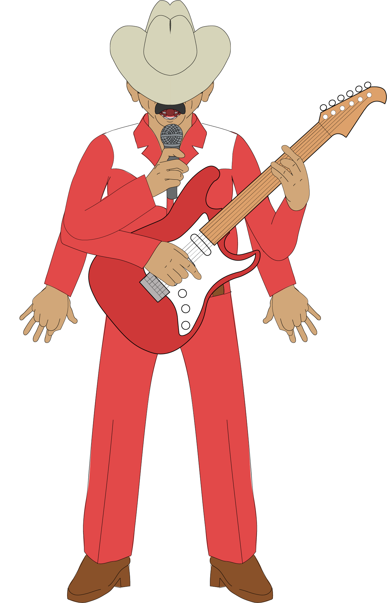

Crear el video musical de "Que No Quede Huella" sin salir de After Effects para la animación: el personaje, el escenario, la letra y cada transición debían construirse y animarse dentro de la herramienta. El proyecto se convirtió en una exploración de casi todo lo que After Effects ofrece, desde la animación de personajes hasta el espacio 3D y los sistemas de partículas.
Todo el universo visual nació en Adobe Illustrator. Diseñé al cantante como personaje, con su sombrero, su traje rojo y sus botas, junto con los objetos que lo acompañan en escena: la guitarra eléctrica, el micrófono y los parlantes.
El personaje no se dibujó como una sola imagen, sino como un kit de piezas listas para animar: brazos y manos separados en distintas posiciones, el sombrero como capa independiente y una serie de bocas para el lip sync, que permiten sincronizar la boca con cada sílaba de la canción.

El kit del personaje: piezas separadas, bocas para lip sync y utilería.
Con las piezas en After Effects, construí un sistema de huesos para articular al personaje y moverlo con naturalidad: brazos, manos y cuerpo responden como un solo esqueleto en lugar de animarse capa por capa.
Para las poses tocando la guitarra preparé variantes de brazos y manos que se intercambian durante la animación, y las bocas se fueron cambiando al ritmo de la letra para que el personaje realmente cante.

Pose con guitarra y variantes de brazos.
Para la escena del concierto armé un escenario tridimensional usando las capas 3D de After Effects: la estructura de vigas metálicas, la tarima y los parlantes se ubican en profundidad, de modo que la cámara puede recorrer el espacio como si fuera un set real.
El escenario de vigas armado en 3D dentro de After Effects.
Alrededor del personaje construí la narrativa visual del video. La letra de la canción se convierte en tipografía animada que aparece, se transforma y llena la pantalla; las transiciones y revelados se resolvieron con luma maps, y la atmósfera se completó con partículas y efectos que acompañan la energía de la música.
Un video musical en el que ilustración, animación de personaje, espacio 3D y motion graphics conviven en una sola pieza, creada de principio a fin en After Effects.
Ver en YouTube